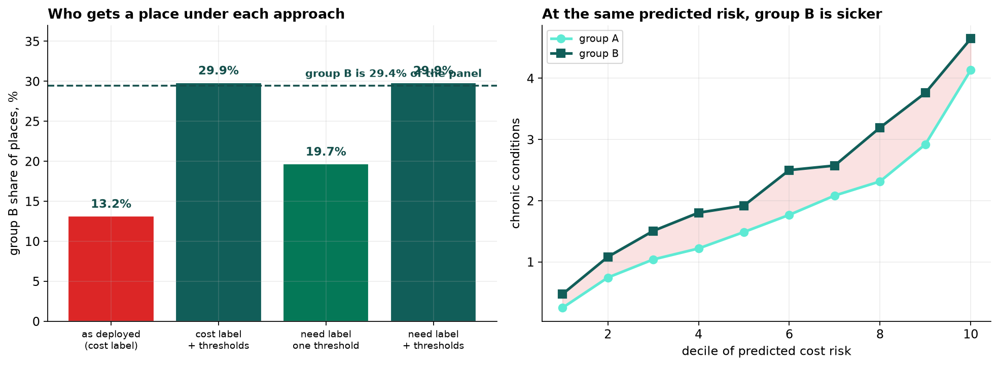
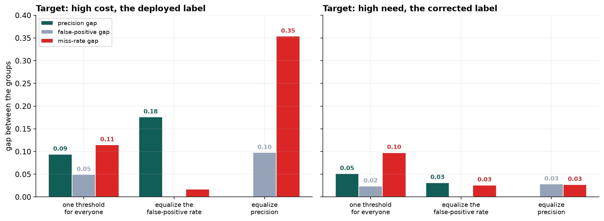

- Setting
- A health system's care-management program: extra nursing, medication review and care coordination, with capacity for about three percent of a twelve-thousand-patient panel. A model ranks everyone and the top slice is auto-enrolled.
- The question
- Does the program reach the patients who need it, and does it reach them equally? It has been running for a year.
- Why it matters
- The model predicts next year's medical cost, because the health system has no direct measure of need and cost is the number every claims system already produces. If cost does not mean the same thing for both groups, a model that ranks cost perfectly ranks need imperfectly.
- What we do
- Run the audit the way it is usually run, watch it pass, then change what we measure against and watch it fail. Compare four remedies, and finish with why no threshold rule can satisfy every fairness criterion at once.
Group A and group B are placeholders for a patient characteristic the health system is required to monitor. The mechanism is real and the people are not. What matters is that the two groups do not have equal access to care, which is a fact about the system rather than about the patients.
Cost Is Standing In for Need
The substitution at the heart of this is neither lazy nor unusual. Cost is the only number a claims system produces for every patient every month without anyone having to define anything. It correlates strongly with illness, it is auditable, and every incentive points at using it.
Group B carries more chronic conditions and generates less spending. Those two facts together are not a paradox. They are the finding, and everything downstream follows from them.
![Four panels. Top left: distributions of chronic conditions by group, with group B shifted slightly right at 2.10 conditions against 1.88. Top right: cost distributions, with group B's mean at 5.1 thousand and group A's at 7.0 thousand. Bottom left: median cost next year plotted against number of chronic conditions for each group, two rising lines with group B consistently below group A and the gap between them shaded. Bottom right: primary care visits and emergency visits against chronic conditions, showing group B with fewer primary care visits and more emergency visits at every level of illness.](../assets/img/capstone-fairness-firstlook.png)
The bottom-right panel is worth sitting with. The evidence of the bias is present in the data, in columns the model uses as predictors rather than as warnings.
The Model Works, and Fails the First Test
The deployed model uses the five features a claims system has: age, primary-care visits, emergency visits, active medications and prior cost. It identifies the most expensive three percent of the panel with an AUC of 0.920. By any ordinary standard it works.
| Group A | Group B | Ratio | |
|---|---|---|---|
| Enrollment rate | 3.72% | 1.36% | 0.36 |
| Share of the 144 places | 86.8% | 13.2% | |
| Share of the panel | 70.6% | 29.4% |
A ratio of 0.36 against the four-fifths threshold of 0.80. This is where an audit starts, and on its own it settles nothing, because there is an obvious defense: if group B genuinely costs less, a cost model is right to rank them lower and the disparity is a property of the data.
The rest of the chapter is about whether that defense holds.
The Audit That Comes Back Clean
The standard next step is to check whether the model's predictions are calibrated within each group. If it says twelve thousand dollars, do both groups go on to cost twelve thousand dollars?
| Top two risk deciles | Predicted | Actual | Ratio |
|---|---|---|---|
| Group A | 14.1k | 14.3k | 1.01 |
| Group B | 12.3k | 10.7k | 0.87 |
The model is close to calibrated on cost, and where it is not, it errs in group B's favor by predicting they will spend more than they do. Read that as an auditor would: every standard check against the label says the model is doing its job, and the one imperfection points away from harm.
A fairness review that audits a model against its own training label cannot find a problem that lives in the label.
Changing What We Measure Against
The audit that works asks a different question. Take the patients the model considers equally risky, and count how ill they actually are.
| Decile of predicted risk | Group A conditions | Group B conditions | Difference |
|---|---|---|---|
| 8th | 2.31 | 3.19 | +38% |
| 9th | 2.92 | 3.76 | +29% |
| 10th | 4.13 | 4.65 | +12% |
| 8th to 10th pooled | 3.19 | 3.69 | +16% |

That is the defense answered. The model ranks group B lower because the same illness generates fewer dollars for them and the model was told to find dollars. Every patient it treats as equivalent to a group A patient is in fact sicker than them, and the program is allocating on the wrong ordering.
None of this is visible in accuracy, calibration, or any error rate computed against cost.
Four Things We Could Do
| Approach | B/A ratio | B share of places | Enrollees truly high-need |
|---|---|---|---|
| As deployed, cost label | 0.36 | 13.2% | 84.7% |
| Cost label, group-specific thresholds | 1.02 | 29.9% | 85.4% |
| Need label, one threshold | 0.59 | 19.7% | 86.6% |
| Need label, group-specific thresholds | 1.02 | 29.9% | 84.7% |
The two remedies do different jobs and neither does both.
Changing the label helps most on who gets in. Training on next year's condition count raises the share of enrollees who are genuinely high-need to 86.6 percent, the best of the four, and lifts group B's ratio from 0.36 to 0.59. It does not reach parity, because the features the model uses, visits and prior cost, carry the same access gap the label did. You cannot fully repair a label problem through a feature set that has the same problem.
Group-specific thresholds deliver parity by construction and improve targeting barely at all, because they reorder nobody. They take the same ranking and cut it in two places.
Doing both gives parity and gives back the targeting gain. That is the honest result and it is not the tidy one: on this panel the combination is no better at finding high-need patients than the cost model was, it is simply far more evenly distributed.
The recommendation is the label change, because it is the only one that improves the measurement rather than redistributing an unimproved one, with thresholds as a policy decision layered on top and reported as one.
Why You Cannot Have Everything
Suppose we tried to fix this purely by choosing thresholds. There is a result that says we cannot: when two groups have different base rates, calibration and equal error rates are mutually incompatible. Here is what that looks like in numbers rather than in algebra.

Equalize the false-positive rate and the precision gap widens to 0.18. Equalize precision instead and the miss rate diverges to 0.35, with group B failing to be identified 76 percent of the time against group A's 41. No threshold pair closes all three, and that is arithmetic rather than a failed search.
Now read the right-hand panel. On the corrected label, once either criterion is equalized every remaining gap is under 0.033. The reason is in the base rates: on cost they are 22.9 percent and 13.1 percent, a gap of nearly ten points that exists because the label is dollars and one group spends fewer of them. On need they are 31.4 and 35.9, and what remains is a real difference in illness.
The severity of the impossibility was itself a symptom. Much of what looked like an unavoidable ethical trade-off had been manufactured by the choice of what to predict, and it went away when that choice was corrected.
What This Does Not Settle
Condition count is also a proxy. It comes from diagnoses on a problem list, and a diagnosis requires someone to have been seen. It is less sensitive to access than dollars are, which is why it is an improvement, but its residual bias runs the same way, so the true disparity is probably larger than measured here.
Two groups, one attribute. Real audits handle several attributes and their intersections, where cell sizes fall quickly and the multiple-comparison problem becomes severe.
Nothing here measures the program's effect. Everything is about who gets a place. Whether care management helps, and whether it helps both groups equally, is a causal question this observational panel cannot answer and a randomized rollout could.
Parity was imposed on a fixed capacity. Every place given to one group is taken from another, which is why parity thresholds cost targeting. If the real answer is that the program is too small, no allocation rule fixes that.
The four-fifths rule is a legal screening device, not a definition of fairness. A model can pass it and still do what this one does, and a model can fail it for entirely justified reasons. It starts audits. It does not finish them.
What to Watch
- ✓Write down what the label is a proxy for. Cost for need, clicks for interest, arrests for crime, tenure for performance. If the target is a stand-in, the audit has to be against the thing it stands in for.
- ✓Ask whether the proxy is equally good for everyone. That is the question the whole chapter turns on, and it is answered by comparing groups at a fixed level of the underlying quantity rather than in aggregate.
- ✓Never conclude from calibration on the label alone. A perfectly calibrated model on a biased target is a perfectly calibrated biased model, and it will pass every check you run against its own predictions.
- ✓Treat the four-fifths ratio as a smoke alarm. It tells you to investigate. It does not tell you the model is unfair, and passing it does not tell you the model is fair.
- ✓Expect to trade one criterion against another. When base rates differ you cannot have calibration and equal error rates together. Decide in advance which one the decision cares about and say so.
- ✓Fix the target before tuning the thresholds. Threshold adjustment redistributes an ordering. Only a better label produces a better ordering, and it also shrinks the trade-offs you then have to make.
Label Bias in Data Science & AI
Almost every consequential model is trained on a proxy, because the thing anyone actually cares about is rarely recorded. The proxy is chosen because it is available, and availability is not neutral.
| What is wanted | What gets predicted | What the gap encodes |
|---|---|---|
| Health need | Medical cost | Who can reach and afford care |
| Job performance | Manager ratings, or tenure | Who managers already favored |
| Crime | Arrests | Where police already patrolled |
| Creditworthiness | Default on loans granted | Only the people previously approved |
| Content quality | Engagement | What provokes a reaction |
In every row the model can be accurate, calibrated and audited clean while doing something nobody intended. The failure is upstream of the algorithm, which is why it survives model changes, more data and better validation, and why so much of the fairness literature that focuses on the classifier cannot reach it.
The four-fifths rule comes from the 1978 Uniform Guidelines on Employee Selection Procedures in US employment law, which is why a statistical audit begins with a legal threshold. Hardt, Price and Srebro formalized equalized odds in 2016, and Kleinberg, Mullainathan and Raghavan along with Chouldechova independently proved the impossibility result the same year: calibration, equal false-positive rates and equal false-negative rates cannot hold together when base rates differ. The label-bias mechanism in this chapter follows Obermeyer and colleagues, who showed in Science in 2019 that a widely deployed US care-management algorithm used cost as a proxy for need and consequently under-referred Black patients at equal illness, and that changing the label largely closed the gap. The practical tooling has moved toward documentation as much as arithmetic, through model cards and datasheets for datasets, both of which begin by asking what the label actually is.
Part XXXIII in three capstones
- Missing Data: What Dropping Rows Costs You took values that were never recorded, and found that the method which fills them in most confidently is the one that is right 3 percent of the time.
- Survival Analysis: Time to Event took events that have not happened yet, and found that leaving them out understates tenure by a third and reverses the answer on a policy question.
- This chapter took a quantity nobody measured at all, health need, and found that the number standing in for it carried a bias that no amount of model validation could see.
Three absences: a value that exists and was not recorded, a value that does not exist yet, and a value that was never collected because something cheaper was available instead. In all three the damage came from the same move, which was letting a convenient stand-in be treated as the thing itself.
The full project, step by step
The companion notebook cleans four faults out of the patient extract, rebuilds the deployed model on claims features and the cost label, measures disparate impact, runs the calibration audit that passes, then re-audits against chronic conditions to show the gap at equal predicted risk, compares four remedies, and demonstrates the impossibility result numerically on both the biased and the corrected label.
The dataset
(capstone-fairness-audit.xlsx) holds 12,000 patients with utilization, chronic conditions,
next-year cost and next-year condition count, as the extract arrived: duplicated patients, negative
billing adjustments, two impossible ages and a group field with gaps. Two written reports accompany it: a
plain-language brief for the chief medical officer, and a technical report
covering the audit design, the four remedies and the impossibility analysis.
🎓 Key Takeaways
- ✓The model was accurate and the outcome was wrong. An AUC of 0.920 on cost, and an enrollment ratio of 0.36 against the four-fifths threshold of 0.80.
- ✓The standard audit passed. Calibration on cost was close within both groups and where it missed it over-predicted group B's spending, pointing away from harm.
- ✓At equal predicted risk, group B carried 16 percent more chronic conditions, rising to 38 percent in the eighth decile. The model ranked them lower because the same illness generates fewer dollars for them.
- ✓Relabeling improved targeting the most and did not reach parity, taking high-need enrollees from 84.7 to 86.6 percent and group B's ratio from 0.36 to 0.59, because the features carry the same access gap the label did.
- ✓No threshold rule satisfies every criterion. On the cost label, equalizing the false-positive rate opened a 0.18 precision gap and equalizing precision opened a 0.35 miss-rate gap.
- ✓The severity of that trade-off was itself a symptom. On the corrected label every gap fell under 0.033, because the ten-point base-rate difference had been an artifact of measuring need in dollars.